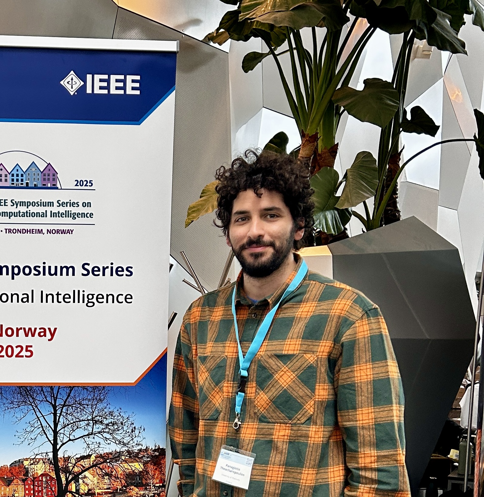

Panagiotis
Theocharopoulos
01 / About
I am an AI Engineer and researcher driving innovation at the intersection of academic research and industry applications. My expertise lies in leading complex machine learning projects with specialization in Large Language Models (LLMs), RAG systems, and Natural Language Processing.
As a PhD Candidate in Computer Science and Biomedical Informatics at the University of Thessaly, I bridge theoretical research with practical applications, developing state-of-the-art AI solutions for healthcare and precision medicine.

02 / Experience
Covariance
Feb 2021 — PresentAI Engineer (Jan 2025 – Present)
- Lead and manage a high-performing data science team focused on healthcare analytics.
- Oversee development of LLM and RAG systems.
- Define technical standards and mentor team members.
- Build internal APIs for model integration.
Data Scientist → Senior Data Scientist (Feb 2021 – Jan 2025)
- Led end-to-end machine learning projects and architected advanced LLM/RAG solutions.
- Authored proposals for national/European funding.
- Designed fraud detection systems for insurance claims.
- Executed ETL processes and built web-based data science apps.
Research Fellow
Jul 2023 — PresentUniversity of Thessaly
- Developed AI/NLP pipelines for unifying multimodal biomedical data (omics, genetic, clinical).
- Contributed to a national precision medicine initiative.
Website Administrator
2019 — 2023University of Thessaly
- Led website development/design, managed databases/servers, provided technical support.
Support Engineer (Intern)
Jul 2017 — Aug 2017Naval Hospital of Athens
- Maintained servers (Windows, AIX), network support, MySQL databases.
- Configured network devices (CISCO, HP, Mikrotik).
03 / Teaching
Teaching Assistant
2019 — 2024University of Thessaly
Lecturer and TA for postgraduate and undergraduate courses:
- Postgraduate: Data Mining and Big Data Analysis in Medicine and Biology
- Undergraduate: Introduction to Programming I & II, Numerical Analysis, Databases
04 / Expertise
AI & Machine Learning
Data & Infrastructure
Spoken Languages
05 / Education
PhD Candidate in NLP & Big Data
University of Thessaly, Greece (Expected 2026)
Thesis: “Development of Deep Learning methods on big data with a focus on NLP”
MSc in Informatics & Computational Biomedicine
University of Thessaly, Greece (2020)
Minor: Computational Medicine and Biology
BSc in Computer Science & Biomedical Informatics
University of Thessaly, Greece (2019)
Erasmus+ Exchange Student
Università degli Studi di Perugia, Italy (2017)
06 / Recognition
Awards
IEEE CIS Student Travel Grant Award, SSCI 2025
Best National Startup of 2022 (Elevate Greece) – Awarded to Covariance
Academic Work Scholarship, University of Thessaly (2019–2021)
Tuition Fee Exemption Scholarship, MSc degree, 2019
Research Projects
Bridging large omics, genetic, and medical data (TAEDR-0539180)
- Role: Research Fellow
- Funding: European Union - NextGenerationEU
Peer Review
Journals
- Neural Computing and Applications
- Cluster Computing
- Social Network Analysis and Mining
- Public Health
- Frontiers in Public Health
Conferences
- IEEE SSCI 2025
- IJCNN 2025
- EAAAI 2025
- ARES 2025
- PSB 2026
Certifications
Building RAG Agents with LLMs (NVIDIA, 2024)
I2I Spin Out Innovation Programme (University of Galway, 2024)
Power BI Financial Reporting & Financial Analysis (Udemy, 2024)
EHDEN’s OMOP-CDM Data Standardization (EHDEN, 2022)
Pedagogical and Teaching Competence (UTH, 2019)
07 / Publications
FILTER BY TYPE
FILTER BY YEAR
Large language models for efficient topic modeling
P. C. Theocharopoulos, P. Anagnostou, S. V. Georgakopoulos, S. K. Tasoulis, V. P. Plagianakos
Neural Computing and Applications, 1-19
Developing predictive precision medicine models by exploiting real-world data
P. C. Theocharopoulos, S. Bersimis, S. V. Georgakopoulos, A. Karaminas, S. K. Tasoulis, V. P. Plagianakos
Journal of Applied Statistics 51(14), 2980-3003
View DOI →Analysing sentiment change detection of Covid-19 tweets
P. C. Theocharopoulos, A. Tsoukala, S. V. Georgakopoulos, S. K. Tasoulis, V. P. Plagianakos
Neural Computing and Applications 35(29), 21433-21443
Transforming Medical Practice: Harnessing the Power of Big Data and Machine Learning for Predictive Precision Medicine
P. C. Theocharopoulos, S. Bersimis, S. V. Georgakopoulos, V. P. Plagianakos, S. K. Tasoulis
2025 IEEE Symposium on Computational Intelligence in Health and Medicine (CIHM), 1-7
Scholar →Who Writes the Review, Human or AI?
P. C. Theocharopoulos, S. V. Georgakopoulos, S. K. Tasoulis, V. P. Plagianakos
arXiv preprint arXiv:2405.20285
Scholar →Detection of Fake Generated Scientific Abstracts
P. C. Theocharopoulos, P. Anagnostou, A. Tsoukala, S. V. Georgakopoulos, S. K. Tasoulis, V. P. Plagianakos
2023 IEEE Ninth International Conference on Big Data Computing Service and Applications (BigDataService), 33-39
Scholar →Text analysis of COVID-19 tweets
P. C. Theocharopoulos, A. Tsoukala, S. V. Georgakopoulos, S. K. Tasoulis, V. P. Plagianakos
International Conference on Engineering Applications of Neural Networks, 517-528
Scholar →